6 Analysis
#04-analysis,qmd
The data preparation steps for this analysis are detailed in the Jupyter notebook notebooks/data_preparation.ipynb, and the Random Forest model implementation and evaluation can be found in notebooks/random_forest.ipynb. These notebooks are available in the project’s source repository.
7 Proposed Research Question:
“Can convolutional neural networks (CNNs) and graph neural networks (GNNs) effectively model the spatiotemporal relationships between ozone exposure and cardiovascular disease (CVD) outcomes at the county level in the United States, and do these models provide improved prediction accuracy or interpretability compared to traditional statistical or machine learning approaches?”
7.1 Graph Neural Networks (GNNs)
- Use GNN to model counties as nodes in a graph, with edges based on adjacency or other meaningful spatial relationships.
- Define counties as nodes and their adjacency (or distance-based proximity) as edges.
- Node features would be time series of ozone metrics, past CVD rates, and other covariates for each county
- Graph Convolutional Networks (GCN), Graph Attention Networks (GAT), GraphSAGE for static graph snapshots per year, or spatiotemporal GNNs like STGCN, DCRNN, GraphWaveNet if you structure data as time-series on nodes.
- Perform comparative analyses with traditional models (linear regression, random forests, etc.).
Questions Answered:
- Can GNNs effectively model the spatiotemporal dependencies in ozone exposure and CVD mortality, leveraging the spatial relationships between counties?
- Do GNNs improve the prediction of county-level CVD mortality rates compared to non-spatial models or traditional spatial statistics?
- Can GNNs help identify counties or regions where the influence of neighboring counties’ ozone levels is particularly important for local CVD rates?
7.2 Convolutional Neural Networks (CNNs)
- Rasterize the merged data (ozone, CVD rates, covariates) onto a regular spatial grid for each year. This creates a sequence of “images” or multi-channel images
- 2D CNNs (if each year’s spatial map is an image), 3D CNNs (if using sequences of years as volumes), or ConvLSTM/CNN-RNN hybrids to capture spatiotemporal features
Questions Answered:
- Can CNNs learn meaningful spatial patterns from gridded ozone and CVD data to predict CVD mortality hotspots or future rates?
- How do local spatial configurations of ozone exposure (as captured by convolutional filters) relate to CVD patterns?
- Do CNNs offer advantages in predictive accuracy over other methods for this gridded spatiotemporal data?
Identifying High-Risk Areas:
- Which counties consistently show high CVD mortality in conjunction with high ozone levels, even after accounting for other factors? (small population counties but for analytical reason).
analytical plan (CNN or GNN architectures, datasets to use).
Quantifying Ozone Impact:
- What is the estimated increase in CVD mortality risk associated with an increase in annual mean/median/max ozone? (GLMs, Mixed Models, GAMs for effect size; ML for prediction importance).
Exploring Non-Linearity:
- Is there a threshold effect for ozone, or does the risk increase differently at different ozone levels? (GAMs, tree-based ML, NNs).
Spatial Spillover:
- Does ozone in one county affect CVD in neighboring counties? (GNNs, some advanced spatial statistical models).
8 Data & Methodology
8.1 Data Preprocessing and Cleaning
Initial exploratory data analysis of the daily census-tract ozone prediction data (DS_O3_pred) for the 2001-2005 period revealed a set of anomalously high values, with a maximum approaching 500 ppb. Further investigation, including time series analysis (as shown in Figure 8.1) and spatial visualization (see Figure 8.2 for geographical distribution), pinpointed these extreme values to a single day, September 13, 2001, predominantly within census tracts in Missouri (State FIPS ‘29’). While daily mean and median ozone levels for Missouri on this date were elevated, they were substantially lower than these localized maximums, as illustrated in Figure 8.1.
Given that these peak values were several orders of magnitude higher than the 99th percentile of the broader dataset for that period (83.2 ppb vs. ~491 ppb) and their extreme magnitude could disproportionately influence county-level annual average calculations, a data cleaning step was implemented. To mitigate this potential bias while retaining information about a significant, albeit localized, high ozone event, DS_O3_pred values for census tracts in Missouri on September 13, 2001, that exceeded 150 ppb were capped at this threshold. This 150 ppb level was chosen as it still represents a very high ozone concentration (categorized as “Unhealthy” by EPA standards for an 8-hour average) but prevents extreme, potentially unrepresentative modeled outputs from dominating subsequent statistical aggregations. This adjustment affected 45 data points on that specific day. The DS_O3_pred data for the other periods (2006-2010 and 2011-2014), which had maximum observed values around 125-127 ppb, did not exhibit such extreme singular-day outliers and was therefore used after standard quality checks without similar capping.
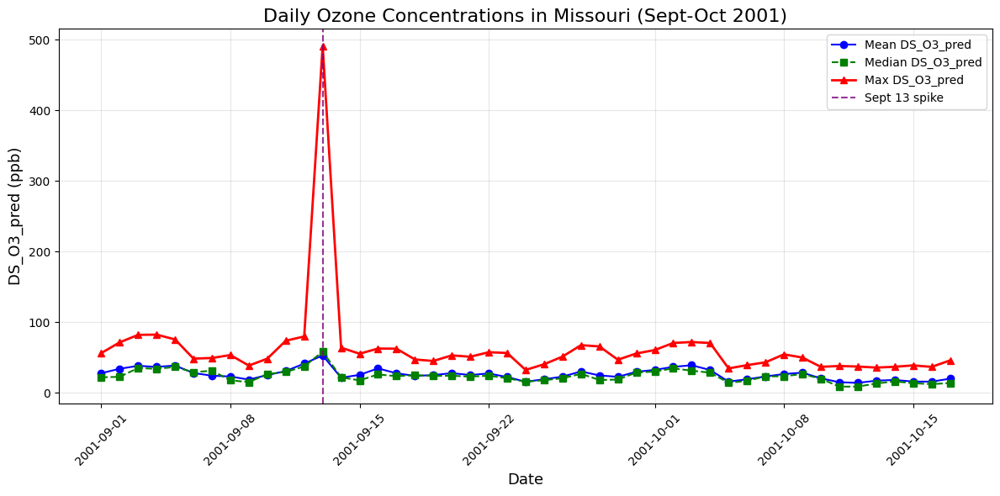
DS_O3_pred values. Note the exceptional spike in maximum predicted ozone on September 13, 2001, which reached values significantly above typical daily maximums observed during this period.
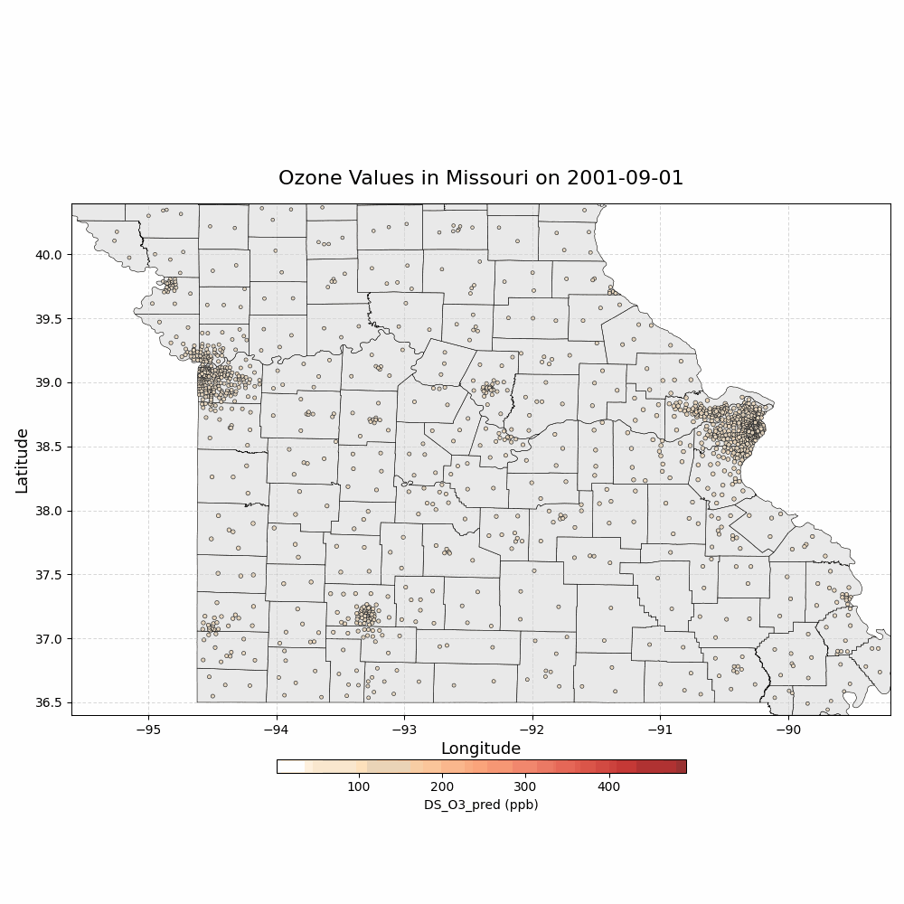
8.2 Construction of the County-Year Analytical Dataset
The final analytical dataset, merged_df_clean, was constructed through a series of preprocessing, standardization, aggregation, and merging steps applied to the source ozone and cardiovascular disease (CVD) mortality data. The daily census-tract level ozone data, originally sourced from three separate files covering 2001-2005, 2006-2010, and 2011-2014, underwent multiple preprocessing stages: For each data segment, state (statefips), county (countyfips), and census tract (ctfips) identifiers were converted to standardized string formats. A consistent 5-digit county identifier (GEOID10) was derived for each record by combining the 2-digit state FIPS and the 3-digit county FIPS (for the 2006-2010 dataset where countyfips represented the 3-digit portion) or by standardizing the existing 5-digit countyfips column (for the 2001-2005 and 2011-2014 datasets). This process ensured comprehensive county coverage, yielding approximately 3,109 unique GEOID10 values per year across all raw ozone data. The date column in each segment was converted to datetime64[ns] format, and a numeric year column (int32) was verified.
As detailed in the preceding “Data Preprocessing and Cleaning” section, anomalously high DS_O3_pred values (those >150 ppb) occurring on September 13, 2001, in Missouri (State FIPS ‘29’) within the df_ozone_2001_2005 dataset were capped at 150 ppb. This affected 45 data points and resulted in a maximum DS_O3_pred value of 150 ppb in the subsequently combined dataset. Other ozone data periods did not exhibit such extreme singular-day outliers requiring capping. The three processed and cleaned ozone dataframes were concatenated into a single comprehensive dataframe (df_ozone_full) containing 412,812,344 daily census-tract level observations from 2001 to 2014. df_ozone_full was then aggregated by year and GEOID10. For each county-year, multiple summary statistics for DS_O3_pred were calculated: mean (mean_ozone_pred), median (median_ozone_pred), maximum (max_ozone_pred), 95th percentile (p95_ozone_pred), and standard deviation (std_ozone_pred). This resulted in the df_ozone_annual_county dataframe with 43,526 unique county-year observations. The GEOID10 column was then renamed to countyfips for merging.
The “Rates and Trends in Heart Disease and Stroke Mortality Among US Adults ≥35 by County, Age Group, Race/Ethnicity, and Sex, 2000-2019” dataset (5,770,240 initial rows) was processed as follows:
- Missing Value Handling: Rows with missing Data_Value (indicating suppressed mortality rates) were dropped.
- FIPS Standardization: The LocationID column (int32) was converted to a 5-digit string and renamed to countyfips to serve as the merge key.
- Year Cleaning: The Year column (originally object type, containing single years and year ranges) was processed to extract single numeric years. Records were subsequently filtered to include only years between 2001 and 2014, aligning with the ozone data’s temporal extent.
The df_ozone_annual_county (containing annual county-level ozone metrics) was merged with the df_cvd_processed (containing annual county-level CVD mortality rates and associated information) using an inner join on year and countyfips.
Characteristics of the Final Merged Dataset (merged_df_clean)
The resulting merged_df_clean dataset contains 2,056,590 rows. Each row represents a unique county-year-CVD Topic combination for which both ozone exposure data and CVD mortality data were available.
- Temporal Range: The dataset spans years 2001 through 2014.
- Spatial Coverage: It includes approximately 3,056 to 3,057 unique US counties per year.
- Key Variables for Analysis:
- year (int32): Observation year.
- countyfips (object): 5-digit county FIPS code.
- Ozone Metrics:
- mean_ozone_pred
- median_ozone_pred
- max_ozone_pred
- p95_ozone_pred
- std_ozone_pred
- CVD Outcome:
- Data_Value: representing age-standardized, spatiotemporally smoothed mortality rate per 100,000.
- Topic: Specific cardiovascular disease category (‘All heart disease’, ‘All stroke’, ‘Coronary heart disease (CHD)’).
- Descriptive CVD columns
- LocationAbbr
- LocationDesc
- GeographicLevel
- DataSource
- Class
- Data_Value_Unit
- Data_Value_Type
- CVD Confidence Intervals:
- Confidence_limit_Low
- Confidence_limit_High
- Stratification Details:
- StratificationCategory1: Age-specific groups: 35-64 years vs. 65+ years
- StratificationCategory2: Sex-specific groups: Men vs. Women
- StratificationCategory3: Race-specific groups: Exploring disparities among different races.
- Data Quality: All key analytical columns (ozone metrics, Data_Value for CVD rate) in merged_df_clean have no missing values.
Dataset Summary (in merged data):
All key analytical columns (ozone metrics, Data_Value for CVD rate) in merged_df_clean have no missing values. The mean_ozone_pred in merged_df_clean has a mean of approximately 39.7 ppb, a standard deviation of 4.2 ppb, a minimum of 20.3 ppb, and a maximum of 54.9 ppb (reflecting annual county averages after outlier capping at the daily tract level). The dataset includes multiple CVD Topics, allowing for analyses focused on specific outcomes. The original stratification columns are retained, offering pathways for future stratified analyses. This meticulously cleaned and merged dataset is designed specifically to support robust spatiotemporal modeling efforts using convolutional neural networks (CNNs) and graph neural networks (GNNs), thereby directly addressing the research question’s methodological and analytical requirements.
8.3 Validation Metrics
8.3.1 Metrics for Regression Tasks (Predicting cvd_mortality_rate)
These assess how close the model’s predictions (\(\hat{y}_i\)) are to the actual values (\(y_i\)).
- Scale-Dependent Errors (in the units of ppb or rate per 100,000):
Mean Absolute Error (MAE): Average absolute difference between predicted and actual values. It’s easy to understand and less sensitive to extreme outliers than MSE/RMSE. Formula: \[ \text{MAE} = \frac{1}{n}\sum_{i=1}^{n}\left| y_i - \hat{y}_i \right| \]
where \(n\) is the total number of data points (county-year observations) being evaluated, \(i\) is the index for each data point, from 1 to n, representing each specific county-year observation, \(y_i\) is the observed value for the \(i\)-th data point, specifically cvd mortality rate for a given year and county, \(\hat{y}_i\) is the value predicted by the model for the \(i\)-th data point for cvd mortality of that same \(i\)-th observation (the specific county-year), \(\left( y_i - \hat{y}_i \right)\) is the prediction error for the \(i\)-th observation and represents the difference between the actual cvd mortality rate and the models predicted cvd mortality, \(\left| y_i - \hat{y}_i \right|\) is the absolute error between the actual value and the prdicted value for the \(i\)-th data point, \(\sum_{i=1}^{n}\) is the summation of all the individual absolute errors across all \(n\) data points, \(\frac{1}{n}\) is the average of the absolute difference,
The MAE will tell us, on average, how many units (deaths per 100,000 population since thats the unit of cvd_mortality_rate) the models predictions of county-level annual CVD mortality rates are off from the actual rates. A lower MAE indicates the models predictions are, on average, closer to the true values.
Mean SquaredError (MSE):
Average of the squared differences. It penalizes larger errors more heavily. Formula: \[ \text{MSE} = \frac{1}{n}\sum_{i=1}^{n}\left( y_i - \hat{y}_i \right)^2 \]
Root Mean Squared Error (RMSE):
The square root of MSE. Its in the same units as tge outcome variable and is a common metric, penalizing large errors. Formula:
\[ \text{RMSE} = \sqrt{\frac{1}{n}\sum_{i=1}^{n}\left( y_i - \hat{y}_i \right)^2} \]
- Scale-Independent Errors (Percentage-based):
Mean Absolute Percentage Error (MAPE):
Average percentage difference. Useful for comparing across different scales, but can be problematic if actual values (\(y_i\)) are zero or very close to zero. Formula:
\[ \text{MAPE} = \frac{1}{n}\sum_{i=1}^{n}\left|\frac {y_i - \hat{y}_i}{y_i} \right|\times 100\% \]
- Goodness-of-Fit / Correlation:
R-squared (R² or Coefficient of Determination):
Indicates the proportion of the variance in the cvd_mortality_rate that is predictable from the model (ozone and other features). Values range from 0 to 1 (higher is better).
\[ \text{R}^2 = 1 - \frac{\sum_{i=1}^{n}\left( y_i - \hat{y}_i \right)^2}{\sum_{i=1}^{n}\left( y_i - \bar{y}_i \right)^2} \]
Pearson Correlation Coefficient:
Measures the linear relationship between the model’s predictions and the true mortality rates
8.4 Preliminary analysis
8.4.1 Preliminary Random Forest Analysis Data-preprocessing
Following the merging of ozone, cardiovascular disease (CVD) mortality, and census-derived population data, the resulting analytical dataset (merged_df_clean) contained 2,056,590 county-year observations. Initial examination of the primary outcome variable, the age-standardized and spatiotemporally smoothed CVD mortality rate (per 100,000 population), revealed a pronounced right-skewed distribution. The rates ranged from a minimum of 1.5 to a maximum of 4,139.0 per 100,000, with a mean of approximately 500.2 and a median of 188.9. This distribution exhibited a skewness of 1.56 (as shown in Figure 8.3, left panel), indicating that a direct application of this variable in modeling could be unduly influenced by extreme high values, potentially stemming from counties with smaller populations where rates are less stable. To address this and create a more symmetrically distributed outcome variable suitable for regression modeling, a natural logarithm transformation was applied. The resulting log-transformed CVD mortality rate exhibited a substantially reduced skewness of -0.24, with a mean of approximately 5.13 and a median of 5.24, indicating a much more symmetrical distribution (Figure 8.3, right panel).
Similarly, the county population estimates within the dataset also demonstrated significant right skewness (11.77), with values ranging from approximately 1,123 to over 10 million, and a mean (~138,602) considerably larger than the median (~35,386). Such a wide and skewed distribution for a predictor variable can also impact model performance and stability. Therefore, a log transformation (specifically log(1+x)) was applied to the county population estimates. This transformation effectively reduced the skewness to 0.52 and resulted in a more symmetrically distributed variable (as depicted in Figure 8.4), rendering it more suitable for inclusion as a covariate in subsequent modeling efforts. These transformations of the outcome variable and a key covariate were performed prior to selecting the final feature set and splitting the data for model training and evaluation.
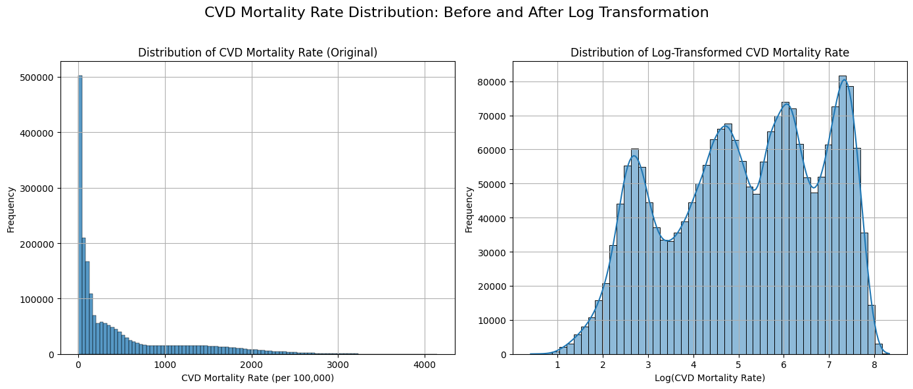
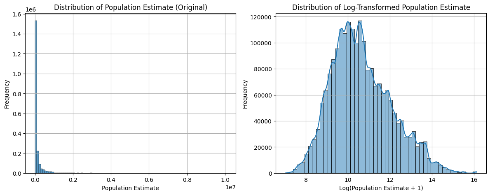
8.4.2 Model Performance and Evaluation
Following data preprocessing and feature engineering for the selected age cohort (35-64 years) and the ‘All heart disease’ outcome, a Random Forest regression model was developed to predict log-transformed county-level annual cardiovascular disease (CVD) mortality rates. Hyperparameter tuning via 5-fold cross-validated Randomized Search identified an optimal model configuration (e.g., 450 estimators, no maximum depth, minimum samples per split of 4, minimum samples per leaf of 1, and ‘log2’ for maximum features), achieving a cross-validated Root Mean Squared Error (RMSE) of 0.2706 on the log-transformed scale during training. The tuned Random Forest model demonstrated strong predictive capability, explaining a substantial portion of the variance in the outcome. On the training set, the model achieved an R² of 0.8906 and a Pearson correlation of 0.9619 between predicted and actual log-transformed CVD mortality rates. More critically, on the held-out test set, the model yielded an R² of 0.4699 and a Pearson correlation of 0.6870, with an Out-of-Bag (OOB) R² score of 0.4786, indicating reasonable generalization to unseen data despite some overfitting observed when comparing training and test performance.
To contextualize these findings, model performance was also evaluated on the original scale of CVD mortality rates (deaths per 100,000 population) by back-transforming the predictions. On the test set, the Random Forest model exhibited a Mean Absolute Error (MAE) of approximately 24.29 deaths per 100,000 and an RMSE of 33.39 deaths per 100,000, corresponding to a Mean Absolute Percentage Error (MAPE) of 21.32%. In comparison, a baseline Linear Regression model trained on the same features achieved a test set R² of 0.1370 (log scale), with an MAE of 31.75, RMSE of 42.39, and MAPE of 28.14% on the original scale. The superior performance of the Random Forest model across all metrics (as visualized in Figure 8.5) suggests its ability to capture complex, non-linear relationships between the ozone exposure metrics, log-transformed population estimates, year, and the age-stratified CVD mortality outcome, which were not adequately addressed by the linear model. The scatter plot of actual versus predicted values on the original scale (Figure 8.6) further illustrates the Random Forest’s comparatively better fit, particularly in the mid-range of mortality rates.
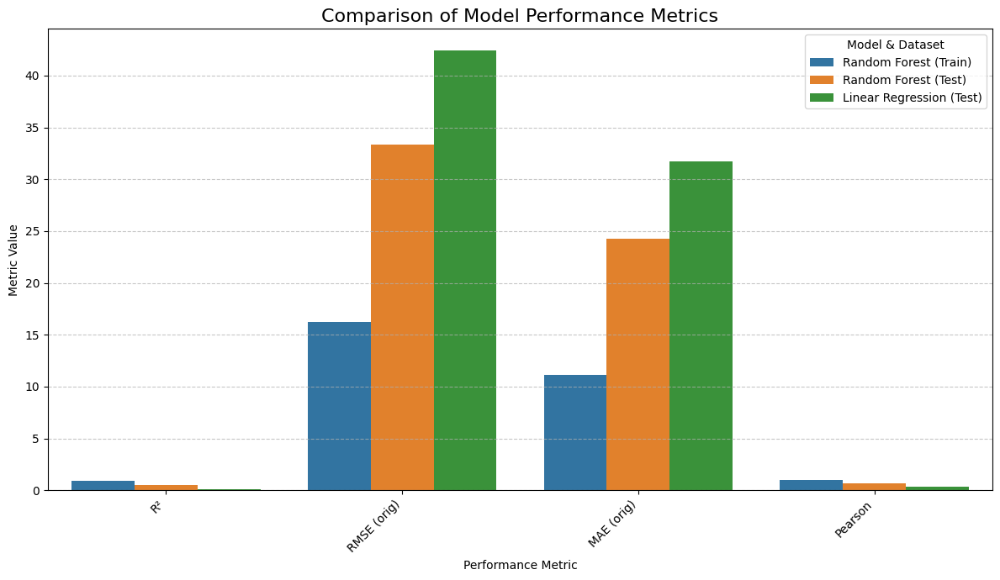
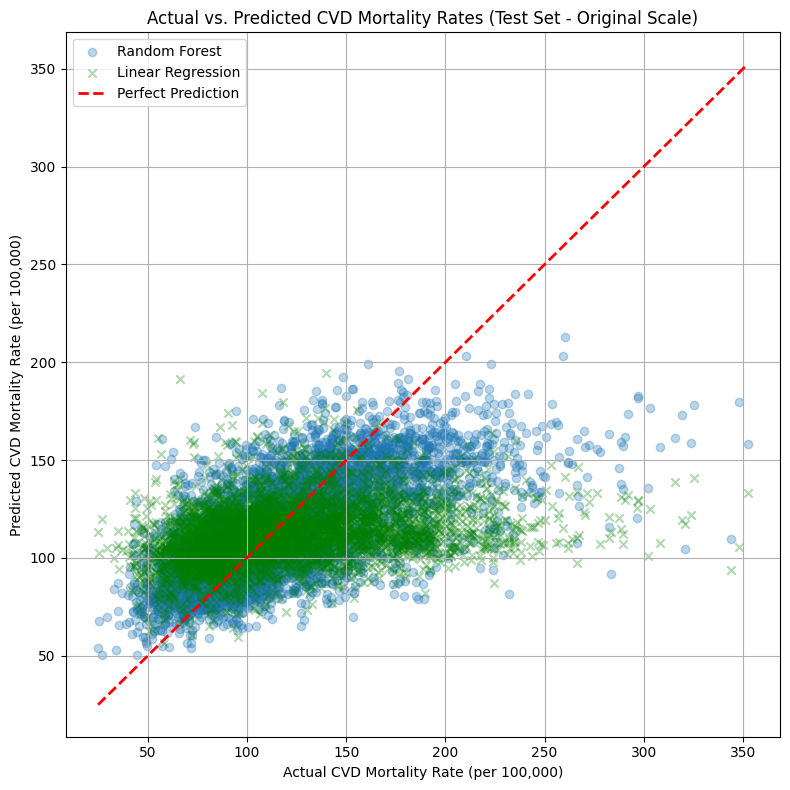
Further validation using learning curves (Figure 8.7) provided insights into the model’s bias-variance characteristics and its response to varying training set sizes. The training RMSE remained consistently low, decreasing from approximately 0.135 to 0.124 (on the log-transformed mortality rate scale) as the number of training examples increased from roughly 2,700 to 27,000. The cross-validation RMSE, while higher, also showed improvement, decreasing from approximately 0.298 to 0.271 over the same range of training data. The persistent gap between the training and cross-validation RMSE curves suggests that the model exhibits some degree of variance, fitting the training data more closely than it generalizes to unseen validation folds. However, both curves began to plateau towards the larger training set sizes, indicating that while the model benefited from increased data up to a point, substantial further improvements in validation RMSE with this specific model configuration and feature set might be limited by simply adding more similar training instances. This plateauing, combined with the validation RMSE being close to the final test set RMSE (0.271 vs 0.267), suggests that the model has learned the generalizable patterns from the available data to a reasonable extent, despite the variance.
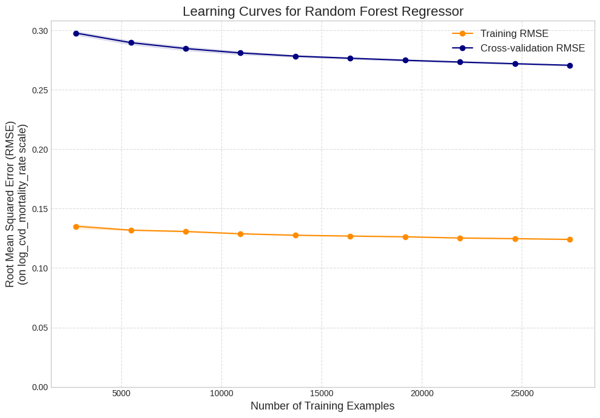
8.4.3 Preliminary Results
Premutation-Based Feature Importance
To further assess the contribution of each predictor to the Random Forest model’s performance on unseen data, permutation feature importance was calculated on the test set. This method evaluates the decrease in model score (negative Root Mean Squared Error) when a single feature’s values are randomly shuffled, thereby breaking its relationship with the outcome. The results, averaged over 10 repeats (Figure 8.8), indicated that metrics characterizing ozone exposure were the most influential predictors for the log-transformed CVD mortality rate within the modeled age group. Specifically, the annual standard deviation of daily 8-hour maximum ozone concentrations emerged as the top feature (mean importance drop ≈ 0.052), closely followed by the annual 95th percentile of daily ozone (mean importance drop ≈ 0.047), the annual median daily ozone (mean importance drop ≈ 0.043), and the annual mean daily ozone (mean importance drop ≈ 0.042).
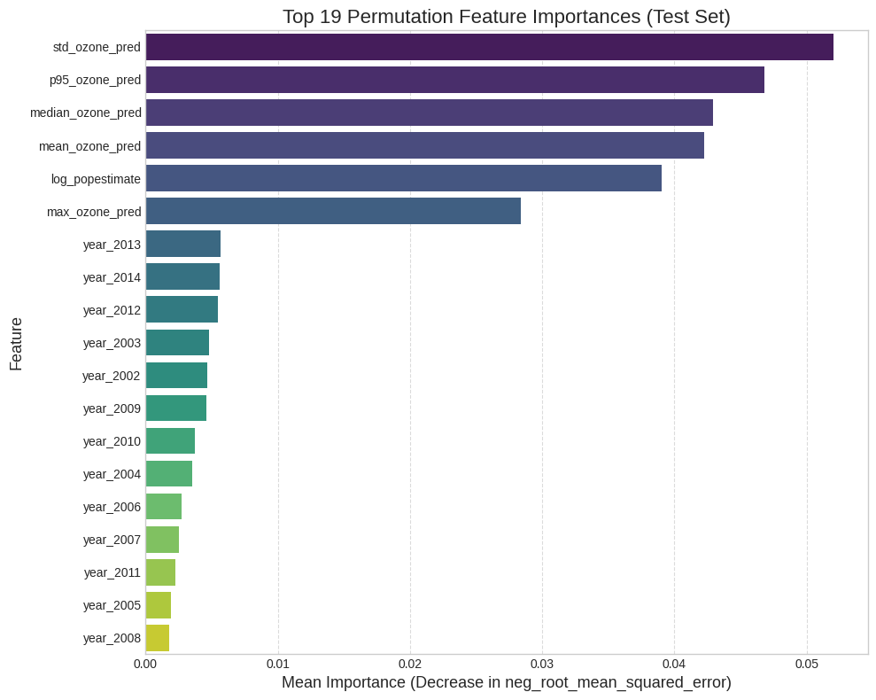
Log-transformed county population estimate also demonstrated substantial predictive importance (mean importance drop ≈ 0.039), ranking among the key ozone metrics. The annual maximum daily ozone concentration followed with a mean importance drop of approximately 0.028. The one-hot encoded year indicators, representing temporal trends, generally showed lower importance values (ranging from approximately 0.001 to 0.006) compared to the primary ozone exposure metrics and population size. These findings suggest that after accounting for broad temporal variations and population size, different aspects of ozone exposure—including its variability, peak levels, and central tendency—are key drivers of the model’s predictive accuracy for CVD mortality within this age cohort.
SHapley Additive exPlanations
While permutation importance provides a global ranking of feature influence based on model performance degradation, SHAP (SHapley Additive exPlanations) analysis was subsequently employed to elucidate the contributions and directionality of individual predictors to the Random Forest model’s output for log-transformed cardiovascular disease (CVD) mortality rates. The global feature importance, as depicted in the SHAP summary (beeswarm) plot (Figure 8.9), reveals that log-transformed county population size is the most influential feature, exhibiting the widest distribution of SHAP values. This indicates that variations in county population have the largest average impact on model predictions. This ranking, based on the average magnitude of impact on model output, is further clarified by the SHAP feature importance bar plot (Figure 8.10), which also positions log-transformed county population size at the top, followed by annual metrics of daily 8-hour maximum ozone concentrations, specifically the 95th percentile, the mean, the standard deviation, the median, and the maximum—demonstrate substantial importance, each showing a significant spread of SHAP values in the beeswarm plot and high mean absolute SHAP values in the bar plot. One-hot encoded year indicators generally exhibit less impact compared to population and the primary ozone metrics.
The SHAP summary plot further clarifies the directionality of these effects. For log-transformed county population size, higher values (indicating more populous counties, shown as red points) predominantly correspond to negative SHAP values, suggesting that larger populations tend to push the model’s prediction of log-transformed CVD mortality rates lower. Conversely, lower population values (blue points) are associated with positive SHAP values, pushing mortality predictions higher. Regarding the ozone metrics, a general pattern emerges where higher values of these exposure indicators (red points)—such as higher 95th percentile ozone, higher mean ozone, or greater standard deviation of daily ozone—are typically associated with positive SHAP values, indicating they contribute to an increase in predicted log-transformed CVD mortality. Conversely, lower ozone metric values (blue points) tend to have negative SHAP values, pushing predictions lower. The year indicators show varying directional impacts, reflecting year-specific adjustments to the baseline mortality prediction.
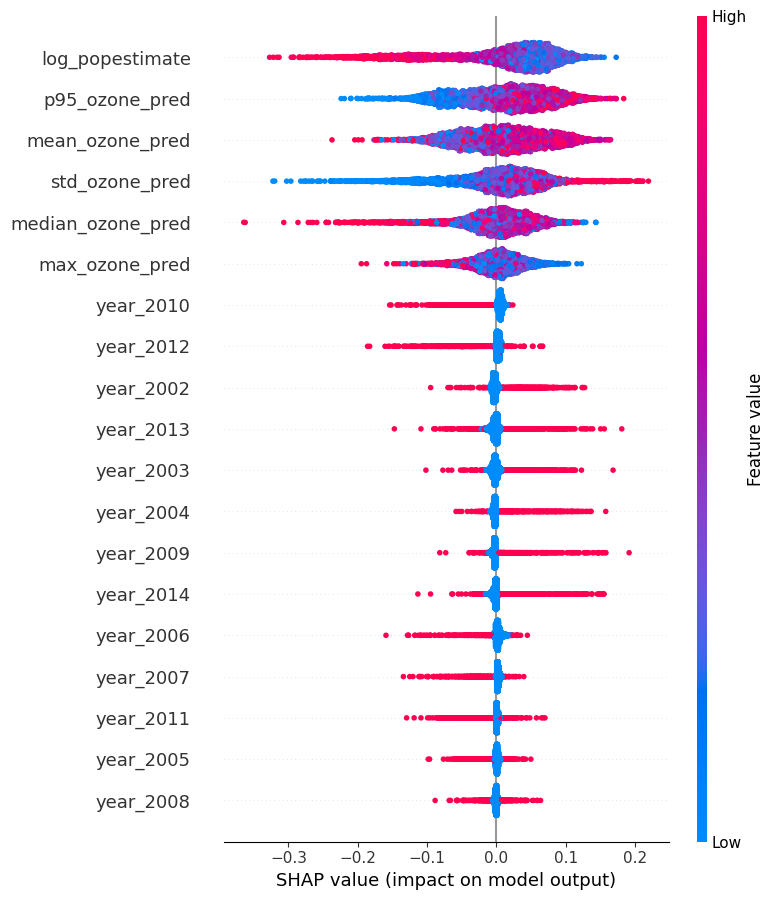
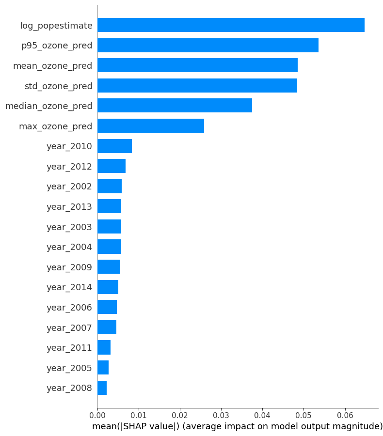
Population Size and Ozone Interactions
County population size, after log-transformation, emerged as a highly influential predictor of log-transformed CVD mortality rates, as depicted in its SHAP dependence plot Figure 8.11. The plot illustrates a generally negative association: as the log-transformed population estimate increases, indicating more populous counties, the corresponding SHAP values tend to decrease. This suggests that, after accounting for ozone exposure metrics and year, larger county population size contributes to a lower predicted CVD mortality rate within the model. The relationship exhibits non-linearity, with a steeper decrease in SHAP values observed for initial increases in log-population, followed by a flattening or more variable trend at very high population levels. This pattern indicates that while an increase in population size generally has a protective association in the model, the marginal benefit may diminish for the most populous counties.
The interaction with the annual median of daily 8-hour maximum ozone concentrations (indicated by the color scale) further refines this interpretation. For counties with lower log-transformed population estimates (less populous counties, represented by bluer points on the interaction scale if median ozone is low, or redder if median ozone is high), higher median ozone levels appear to be associated with higher SHAP values for population (pushing the overall mortality prediction higher, or attenuating the protective effect of being a small county if the SHAP values for population are positive for small populations). Conversely, for more populous counties, the interaction with median ozone is less distinct, though the overall trend of larger populations being associated with lower predicted mortality persists. This suggests that the generally observed lower predicted CVD mortality in more populous counties might be less pronounced or even counteracted when median ozone levels are concurrently high, particularly in less populous areas where other unmeasured factors correlated with both rurality and higher median ozone could be at play. Understanding this interaction is crucial, as population size often serves as a proxy for various socioeconomic, environmental, and healthcare access factors that can modify the impact of environmental exposures like ozone.
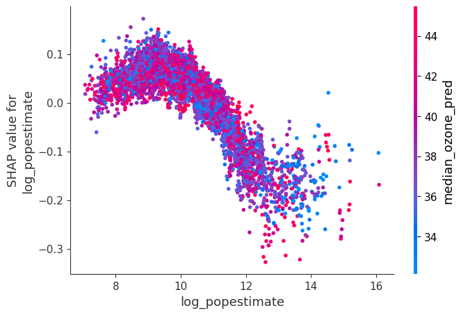
Peak Ozone Exposure
The influence of peak ozone exposures, represented by the annual 95th percentile of daily 8-hour maximum ozone concentrations, on predicted log-transformed cardiovascular disease (CVD) mortality rates was examined using SHAP dependence plots (Figure Figure 8.12). A generally positive association was observed: as the 95th percentile ozone levels increased from approximately 40 ppb up to around 65-70 ppb, their corresponding SHAP values tended to increase. This indicates that higher peak ozone exposures in this range contribute to higher predicted CVD mortality rates within the age group modeled. Beyond approximately 70-75 ppb, where fewer data points exist, the trend in SHAP values became less distinct and more variable, suggesting a potential plateau or a more complex relationship at very high peak exposure levels.
The analysis further revealed an interaction between peak ozone exposure and county population size (log-transformed). For counties experiencing lower to moderate levels of peak ozone (50-65 ppb), those with larger populations (indicated by higher log_popestimate values, shown as redder points on the plot) generally exhibited SHAP values for peak ozone that were closer to zero or slightly lower than those for less populous counties (bluer points). This suggests that, for a given level of peak ozone within this range, the model attributes a somewhat attenuated increase in predicted CVD mortality risk if the county is more populous, or a comparatively larger increase if it is less populous. At the highest observed levels of peak ozone ( >70 ppb), while the interaction was less clearly defined, many of the instances where peak ozone had the largest positive impact on predicted mortality (highest SHAP values) were associated with counties of lower to moderate population sizes. This complex interaction implies that the impact of high peak ozone days on CVD mortality risk, as learned by the model, may be modulated by county population size or unmeasured characteristics correlated with it.
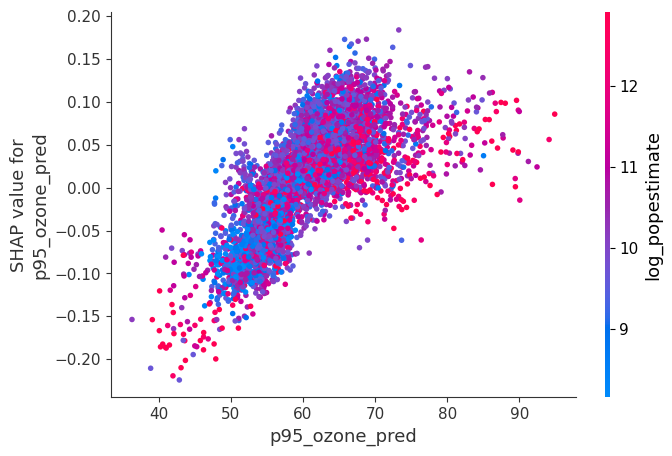
Daily Ozone Variability
Similarly, the variability of daily ozone, represented by the annual standard deviation of daily 8-hour maximum ozone concentrations, demonstrated a notable influence on predicted log-transformed CVD mortality rates (Figure Figure 8.13). Generally, an increase in the standard deviation of daily ozone was associated with higher SHAP values, indicating that greater day-to-day variability in ozone concentrations tends to elevate the predicted CVD mortality risk. This relationship appeared somewhat non-linear, with the impact potentially steepening at lower levels of variability and becoming more dispersed at higher standard deviations.
An interaction was also observed between ozone variability and the annual mean daily 8-hour maximum ozone concentration. For any given level of ozone variability, instances where the mean ozone concentration was also high (indicated by redder points on the plot) typically corresponded to higher positive SHAP values, signifying a greater push towards increased predicted mortality. Conversely, when mean ozone levels were low (bluer points), the positive impact of ozone variability on predicted mortality was generally attenuated. The largest positive SHAP values for ozone variability (around 0.2) were observed when both the standard deviation of daily ozone and the annual mean ozone concentration were high (standard deviation >17.5 ppb). This suggests that the health risk associated with ozone exposure is not solely dependent on average concentrations but is also amplified by the instability or fluctuation of daily ozone levels, particularly when average levels are already elevated.
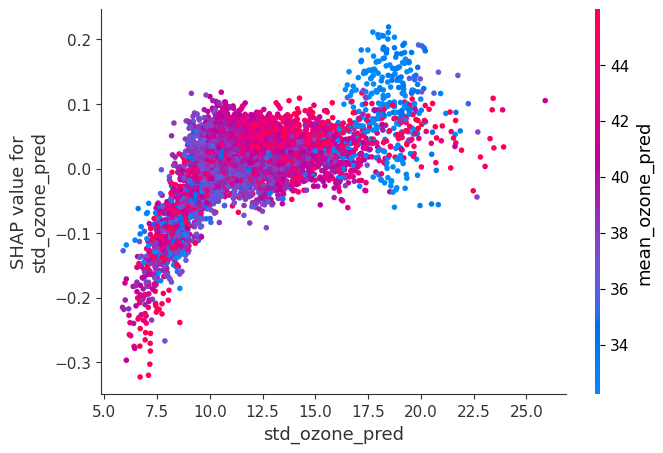
Median Ozone Non-linearity
The relationship between the annual median of daily 8-hour maximum ozone concentrations and predicted log-transformed CVD mortality also exhibited non-linearity and interaction effects ( Figure 8.14). From approximately 20 ppb up to around 40-42 ppb, an increase in median ozone levels generally corresponded to higher SHAP values, indicating a positive association with predicted CVD mortality. However, beyond this range (approximately >42-45 ppb), the trend appeared to reverse or become considerably more scattered, with higher median ozone values sometimes associated with negative SHAP values, suggesting a complex, non-monotonic relationship.
This pattern was further modulated by the annual 95th percentile of daily ozone (representing peak exposure days). In the range where median ozone showed a positive association with predicted mortality (30-42 ppb), the presence of high peak ozone days (indicated by redder points) tended to amplify this positive impact, resulting in larger SHAP values. Interestingly, in the region where very high median ozone levels (>45 ppb) began to show a less clear or even negative association with predicted mortality, many of these instances also corresponded to high peak ozone days (red or purple points). This complex interplay suggests that while moderate increases in typical (median) ozone levels are associated with increased predicted CVD risk, particularly when extreme peak days are also common, the effect of very high median ozone levels might be saturated or interact differently with other factors when peak exposures are concurrently high.
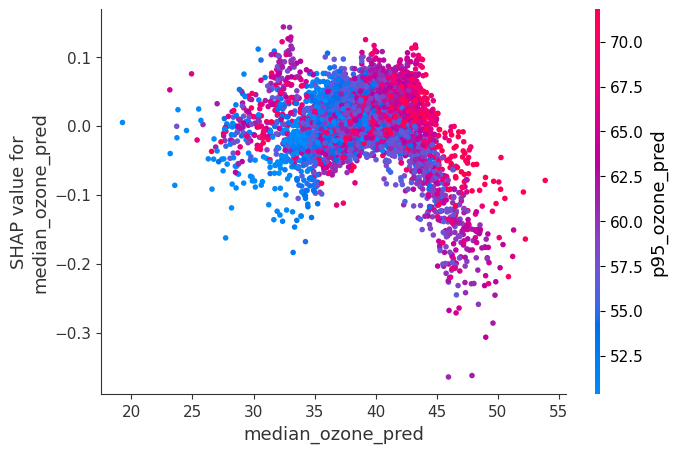
Annual Maximum Ozone Impacts
Furthermore, the impact of the annual maximum of daily 8-hour maximum ozone concentrations on predicted log-transformed CVD mortality rates also showed a dependency on county population size (Figure 8.15). A general positive trend was observed where an increase in maximum ozone levels, from approximately 50 ppb up to around 90-100 ppb, corresponded to an increase in SHAP values, thereby pushing predicted CVD mortality higher. Beyond 100 ppb, this relationship became more variable, with the positive impact potentially diminishing, although data points in this higher range were less frequent.
The interaction with county population size (log-transformed) indicated that counties with larger populations (redder points) generally exhibited SHAP values for maximum ozone that were closer to zero or slightly negative, even at higher maximum ozone levels. In contrast, less populous counties (bluer points) displayed a clearer positive trend between maximum ozone and its SHAP value, suggesting a stronger contribution to increased predicted mortality in these areas. This implies that the model perceives the risk associated with high maximum daily ozone exposures as being more pronounced or apparent in counties with smaller populations, while more populous counties appear to have a dampening effect on this specific risk factor.
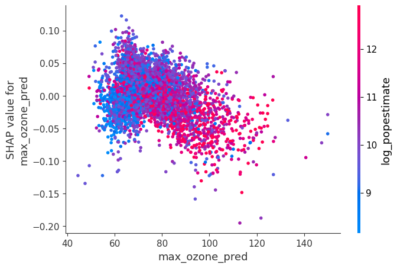
Annual Mean Ozone Concentrations
The influence of the annual mean of daily 8-hour maximum ozone concentrations on predicted log-transformed CVD mortality rates is central to the primary research question (Figure 8.16). The SHAP dependence plot reveals a generally positive trend for this variable: as mean ozone levels increase from approximately 25 ppb to around 40 ppb, the corresponding SHAP values tend to rise, indicating that higher average ozone exposures contribute to an increase in the model’s prediction of CVD mortality risk. Beyond approximately 40-45 ppb, this positive relationship becomes less distinct, with SHAP values becoming more scattered and potentially showing a slight decrease or plateau. This suggests a non-linear effect, where the impact of increasing mean ozone on predicted mortality might diminish or become more variable at higher average concentration levels, possibly due to other factors becoming more influential or a saturation in the exposure-response relationship as captured by the model.
This relationship is further nuanced by interaction with the annual 95th percentile of daily ozone (representing peak exposure days), indicated by the color scale on the plot. Instances where peak ozone days are more frequent or intense (redder points) tend to be associated with higher SHAP values for mean ozone, particularly in the mid-range of mean ozone concentrations (e.g., 35-45 ppb). This observation implies an amplification effect: the adverse impact associated with a given level of mean ozone on predicted CVD mortality appears to be greater when a county also experiences more extreme peak ozone days. This interaction highlights the importance of considering not only average ozone exposure but also the occurrence of high-pollution episodes when assessing CVD risk.
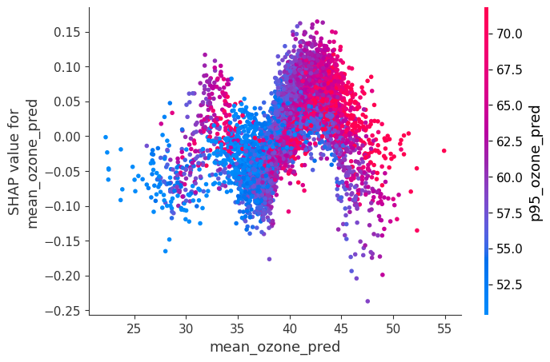
8.4.4 Summary of Preliminary Random Forest Findings
This preliminary analysis, employing a Random Forest regressor, aimed to establish a baseline understanding of the relationships between various annual county-level ozone exposure metrics and log-transformed cardiovascular disease (CVD) mortality rates for adults aged 35-64 years, while controlling for county population size (log-transformed) and year. The model demonstrated notable predictive capability, achieving a test set R² of approximately 0.470 and an Out-of-Bag R² of 0.479. On the original scale of mortality rates (deaths per 100,000), this translated to a Mean Absolute Error (MAE) of approximately 24.3 on the test set. Learning curve analysis indicated that while the model effectively learned from the training data (training RMSE ≈ 0.124), its generalization performance (cross-validation RMSE ≈ 0.271) plateaued, suggesting that the current feature set captures a substantial portion of the explainable variance for this model architecture. The Random Forest significantly outperformed a baseline linear regression model (Test R² ≈ 0.137), underscoring the presence of non-linear relationships or interactions among the predictors.
Feature importance analyses, including both permutation importance and SHAP values, consistently identified metrics of ozone exposure as primary drivers of the model’s predictions within this age-stratified context. Permutation importance highlighted the annual standard deviation of daily maximum ozone concentrations as the most influential feature (mean importance drop ≈ 0.052), followed by the 95th percentile, median, and mean ozone concentrations. SHAP analysis further elucidated these relationships, confirming log-transformed county population size as having the largest average impact on predictions globally, followed closely by the suite of ozone metrics. SHAP dependence plots revealed that higher values across various ozone exposure characterizations (mean, median, 95th percentile, maximum, and standard deviation) generally corresponded to an increased predicted log-transformed CVD mortality rate, often exhibiting non-linear patterns and interactions with population size or other ozone metrics. For instance, the adverse impact associated with mean ozone levels appeared to be amplified in the presence of more frequent high-peak ozone days. Similarly, the impact of peak and maximum ozone exposures on predicted mortality was more pronounced in less populous counties. These preliminary findings establish a statistical association between ozone exposure and CVD mortality and highlight the complex, non-linear nature of these associations, providing a crucial benchmark for the subsequent application of more advanced spatiotemporal deep learning models like CNNs and GNNs, which are hypothesized to better capture these intricate dependencies.
9 Limitations & Future Directions
The preliminary Random Forest analysis described herein, while providing valuable baseline insights into county-level ozone-cardiovascular disease (CVD) associations, is subject to multiple limitations inherent in data and modeling approaches. The ozone exposure metrics were derived from daily census-tract level predictions aggregated to annual county averages, which introduces uncertainty from the initial prediction models and results in a loss of finer temporal granularity that might be crucial for understanding acute or sub-annual health impacts. Similarly, the use of county-level, “spatiotemporally smoothed” CVD mortality rates, while robust for addressing small number instability, limits the ability to detect intra-county variations and carries the potential for ecological fallacy. Although the preliminary models controlled for population size and year, the complex etiology of cardiovascular disease necessitates a wider consideration of potential confounders. The nature of the standard Random Forest also means that spatial autocorrelation and complex spatiotemporal dependencies between counties were not modeled at this initial stage.
Recognizing these limitations, the subsequent phases of this research, including the planned application of Convolutional Neural Networks (CNNs) and Graph Neural Networks (GNNs), are designed to address some of these issues and explore new analytical dimensions. To enhance confounder control in these more advanced modeling stages, our readily available county-level CDC Social Vulnerability Index (SVI) data for the corresponding years will be integrated. This dataset provides comprehensive metrics on socioeconomic status, household composition, minority status, housing type, and access to transportation, which are critical covariates in environmental health studies. Additionally, data from the National Emissions Inventory (NEI), encompassing information on ozone precursors, is also at our disposal and will be explored to potentially refine exposure characterization, account for regional variations in ozone formation drivers, or serve as additional covariates in the spatiotemporal models. The primary future direction involves leveraging CNNs, which can effectively process rasterized environmental data, and GNNs, which are good at modeling relationships within graph-structured county networks. These advanced models are hypothesized to better capture the intricate spatiotemporal dependencies and non-linear relationships suggested by the preliminary Random Forest analysis.
Looking further ahead, additional avenues could significantly refine and expand upon this research. For instance, achieving even greater resolution in health outcome analysis could be possible by accessing more granular CVD mortality data, ideally at sub-county levels such as the census tract. While resources like the Surveillance, Epidemiology, and End Results (SEER) Program database, particularly the SEER Research Plus data, offer detailed county-level data and potentially information at finer geographic scales (though census-tract level mortality data is not typically available publicly), access currently requires an eRA Commons account, for which I cannot request access for directly. While this is a logistical hurdle beyond the immediate scope, pursuing such data represents a valuable direction for future, more localized investigations. Other future enhancements could include expanding the temporal scope of the analysis beyond 2014, incorporating a wider array of environmental co-exposures (temperature, PM₂.₅ in multi-pollutant models with advanced interaction terms), exploring additional deep learning interpretability techniques, and extending the geographical focus to assess the generalizability of findings. Addressing these limitations and pursuing these future directions will be crucial for a more comprehensive understanding of the complex interplay between ozone exposure, its spatiotemporal dynamics, and cardiovascular health.
10 CNN/GNN Preperation
10.1 Stratification
Overall Population (baseline)
Age-specific groups: 35-64 years vs. 65+ years
Sex-specific groups: Men vs. Women
Race-specific groups: Exploring disparities among different races.
link back to 02-data-collection.qmd.
Describe selected data subset.
Detailed description of analytical approach (CNN/GNN models, software, computational resources).
11 Model Development & Training
Step-by-step overview of CNN/GNN architecture used.
Training strategies (cross-validation, hyperparameter tuning).
GPU optimization (tensor parallel for computational efficiency).
12 Results
Quantitative evaluation (metrics, cross-validation results).
Spatial visualizations (heatmaps, predictive maps, hotspot analysis).
13 Interpretation and Discussion
Interpret key findings and link to broader literature.
Discuss implications for environmental health policy and practice.
- Metrics for Spatiotemporal Model Evaluation:
Spatial Distribution of Errors:
Temporal Performance:
Moran’s I on Residuals:
13.0.1 Metrics for Classification Tasks
when converting cvd_mortality_rate into classes (“low,” “medium,” “high” risk based on quantiles), then classification metrics would apply:
- Accuracy:
Overall proportion of correct classifications. Formula:
- Precision:
For a given class, what proportion of predictions for that class were correct? Formula for class ‘X’:
- Recall (Sensitivity):
For a given class, what proportion of actual instances of that class did your model correctly identify? Formula for class ‘X’:
- F1-Score:
The harmonic mean of precision and recall, useful for imbalanced classes. Formula for class ‘X’:
- Area Under the ROC Curve (AUC-ROC):
For binary or multiclass (one-vs-rest) classification, evaluates the model’s ability to distinguish between classes.
- Confusion Matrix:
A table showing true positives, true negatives, false positives, and false negatives for each class.